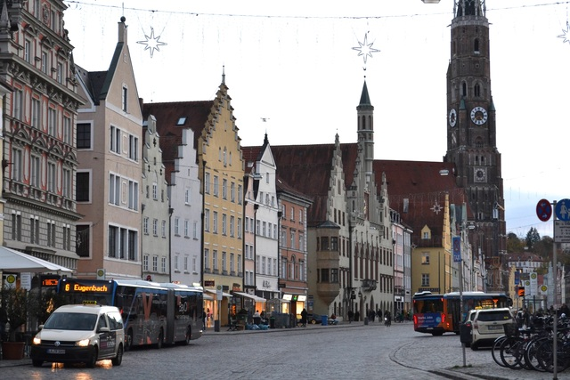
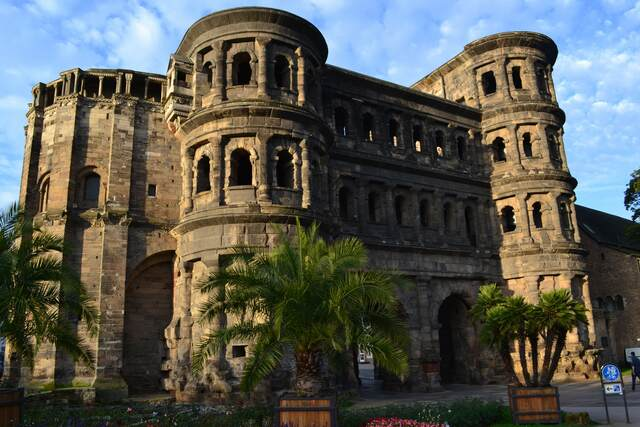
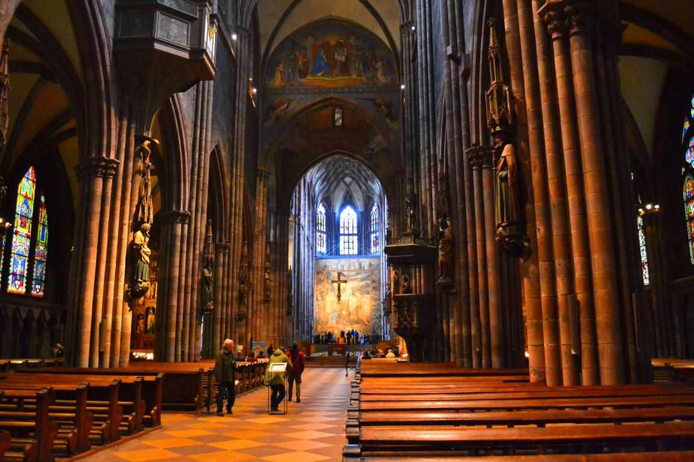

東横イン フランクフルト中央駅前に泊まってみた。三菱のエアコンもウォシュレットもあるし想像以上に再現性高くてドイツに来た感ゼロ 笑。圧倒的な安心感。

マインツは活版印刷技術の発明者ヨハネス・グーテンベルクの出身地でありグーテンベルク博物館がある。 活版印刷が発明される以前は、自分の思想を広めるためには写本して伝えていくしかなく世界はゆっくり動いていた。 活版印刷技術は情報のコピーコストを一気に低下させ、大航海時代の探検や宗教改革を含む文化上の大変革を引き起こしていく。 情報のコピーコストの低下という観点から眺めれば、文字、活版印刷技術、インターネットは革命的発明だった。 そして活版印刷技術がもたらした西洋世界の進歩と混乱は、インターネットがもたらした進歩と情報の波に翻弄される現代の我々にどこか符合するように思う。 はたしてインターネットの次に来る革命は何だろうか。
ロマネスク様式のマインツ大聖堂。
2世紀のローマ帝国の遺跡群が残るトリーア。フランスとルクセンブルクの国境はすぐそこである。
ローマ時代の黒い城門、ポルタ・ニグラ。

スイス国境に接するボーデン湖畔の街コンスタンツ。街並みには灰色がかった建物が目立ちスイスの影響を色濃く受けていることを物語る。
ライン川はこの街から始まる。始まりの場所。
世界史で有名なコンスタンツ宗教和議が開かれた建物が現存しており今はレストランになっている。 600年前の建物が今でも大切に保存され使われてるところがいい。
コンスタンツからミュンヘンに向かう途中、シグマリンゲン行きの気動車の中で見かけた無人ビール販売。 昭和初期の頃のような古い気動車がものすごい轟音を立てながらドナウ川が作り出した渓谷を走り抜けていく。
フランス国境に近いバーデン・ヴュルテンベルク州の街。 1200年に建設が開始されたフライブルク大聖堂は、 ロマネスク様式で建築されはじめたものの、 フランスのストラスブールやスイスのバーゼルなどの文化的影響を受けつつ最終的にゴシック建築になった。 バイエルンの教会建築とはやや趣が異なる。

カールスルーエとは「カール大帝の休息地」の意味。
カールスルーエの中心には広大な宮殿があり、この宮殿から放射状に広がる形に道路網が整備されている。 太陽の光線を表現しているらしい。
カールスルーエ中央駅に射し込む朝の光。
ベルギー、オランダの国境に近いドイツの街。 この街出身の知り合いいわく「ユーロが導入される前は3種類の貨幣を持ち歩かなきゃならなくて大変だった」。
カール大帝が築いたアーヘン大聖堂。神聖ローマ帝国はここから始まった。 あのどこか捉えどころのない、 「神聖でもなければ、ローマ的でもなく、そもそも帝国ですらない」とヴォルテールに言わしめたこの帝国に、 何か神秘的なものを感じるのはぼくだけではないだろう。 世界遺産に登録されている。
アーヘン大聖堂の内部。ステンドグラスがとても美しい。
街の市場の様子。
パン屋さんのショーケース。ドイツパン好きにはたまらない光景だ。眺めてるだけで幸せになる。
ケルン大聖堂で有名な大きな観光都市。 駅を降り立つと、目の前にすさまじく高い大聖堂が聳え立っていて驚く。 ゴシック建築の傑作である。
緻密に作り込まれたタンパン。
ステンドグラス。
ケルン大聖堂の前にかかるホーエンツォレルン橋には、端から端まで南京錠がかけられている。 もう錠をかけるスペースがないくらいぱんぱんなのだが、これどうやって外すんだろうか。 橋の柵ごと撤去するしかないように見える。
夜のホーエンツォレルン橋とケルン大聖堂。日が落ちるのを対岸で待った。10月の夕暮れは寒かった。
ケルン大聖堂があまりにも有名なのだが、ケルンにはロマネスク様式の教会が12個散らばっている。
「アウクスブルクの宗教和議」で有名な都市。 旧市街は残されているのだが、全体的に近代的な都市の印象が強く、惹かれるものがいまいちなかった。
アインシュタインの故郷、ウルム。 ウルムは大きな都市で街並みが魅力的という感じでもないのだが、ウルムには世界最大の尖塔を持つウルム大聖堂がある。 ゴシック様式の傑作だ。 訪れたのは1月初めだが、クリスマスツリーがまだ立っていた。
この尖塔はてっぺんまで登ることができる。 実際に登ってみたのだが、想像以上に高く想像以上に「てっぺん」まで行ける。 こんな螺旋階段をひたすら塔のてっぺんまで登るのだ。
まだ上に行けるのか。。。すでに塔の面積は相当狭くなっており風がビュンビュン吹いている。
塔のてっぺんからの眺め。
登って降りてきたら足ががたついてしまい、教会のなかでしばらく村上春樹を読んで休憩した。
ドナウ川のほとりに位置するレーゲンスブルク。 旧市街の街並みが美しく世界遺産に登録されている。
ドナウ川を渡る石橋。

街の中心に聳えるレーゲンスブルク大聖堂は、見事なゴシック建築である。
裏路地がいい。